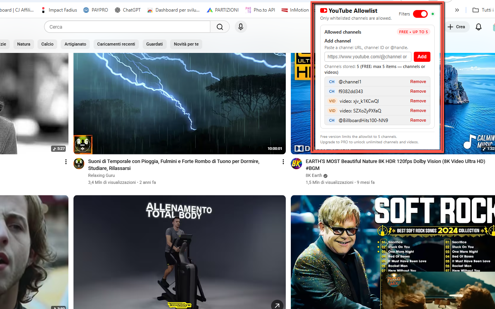
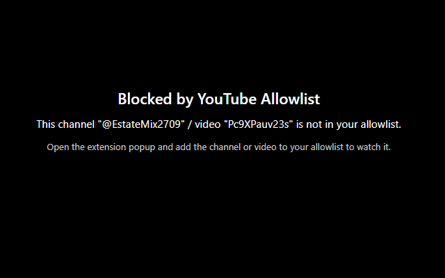

YouTube Allowlist
YouTube Allowlist gives you full control over what content can be watched on YouTube. Instead of trying to block every unsafe or distracting video, this extension flips the logic: only videos from approved channels or specific video URLs are allowed — everything else is blocked.
This makes it ideal for parents, schools, libraries, shared computers, offices, and focus mode setups. You decide which channels and videos are allowed, and YouTube Allowlist takes care of blocking the rest: normal videos, Shorts, embedded players on external sites, and more. If a page is not on the allowlist, playback is stopped, the audio is muted, and a clear full-screen message is shown: “This video has been blocked by YouTube Allowlist.”
The extension is designed to be simple and robust: adding an item to the allowlist is as easy
as opening a trusted YouTube channel or video and clicking the extension popup. You can whitelist content
using channel URLs (including youtube.com/channel/…), @handles, Channel IDs
(starting with UC…), or specific video URLs (including youtu.be links and Shorts).
A small status indicator shows when filtering is active, and an On/Off toggle lets you temporarily disable
YouTube Allowlist with a single click.
Everything is stored locally in your browser: no accounts, no cloud sync, no external tracking. Your allowlist remains private on your device. In the Free version you can add up to 5 items (channels or videos). By entering a PRO unlock code, you upgrade to unlimited allowlist capacity, perfect for more demanding or professional use cases.
Install YouTube Allowlist from the Chrome Web Store✨ Key Features & Benefits
- Allowlist-based filtering: only approved channels and specific video URLs are allowed to play.
- Blocks everything else: non-approved content is blocked, including normal videos (
/watch), Shorts (/shorts) and embedded players. - Audio-safe: audio is muted and playback is repeatedly paused on blocked videos to prevent bypasses.
- Full-screen block notice: unapproved videos show a clear message: “This video has been blocked by YouTube Allowlist.”
- Clean, intuitive popup: simple interface to add, view and manage your allowlist.
- Flexible channel input: add channels via direct URL,
@handleor Channel ID (UC…format). - Flexible video input: add full video URLs,
youtu.beshort links, and Shorts URLs. - On/Off toggle: quickly enable or disable filtering without removing your allowlist.
- Status indicator: a small blinking dot shows when YouTube Allowlist protection is active.
- No account required: all data is stored locally via Chrome storage; nothing is uploaded.
🆓 Free vs ⭐ PRO
Free Version:
- Add up to 5 approved items (channels or individual videos).
- Filtering features work fully — no time limit.
- Perfect for testing, small setups, or a single user.
PRO Version (unlock by code):
- Unlimited allowlist capacity: add as many channels and videos as you need.
- Ideal for:
- Schools and classrooms
- Libraries and community centers
- Shared workspaces and offices
- Home parental control with many trusted channels
- Upgrade by simply entering your PRO unlock code directly in the extension popup.
🧭 How It Works
- Install YouTube Allowlist from the Chrome Web Store.
- Open any YouTube channel or video that you consider safe and appropriate.
- Click the extension icon in the toolbar to open the popup.
- Click to add the current channel or video to your allowlist (or paste a URL / ID manually).
- Repeat for every channel or video you want to approve.
- Make sure the protection toggle is set to On (you’ll see a working/blinking indicator).
- From now on, only items on your allowlist are allowed to play normally.
- When someone tries to watch a non-allowed video, playback is blocked, audio is muted, and a full-screen message is shown.
- Use the toggle to temporarily disable protection if you need unrestricted access for a short time.
📌 Best Use Cases
- 👨👩👧 Parental control: allow only a curated list of kids’ channels and educational videos.
- 🧑🏫 Education: configure classroom computers to show only learning content and trusted channels.
- 🕒 Productivity mode: block distracting channels and keep only work-related or study resources.
- 🖥️ Public or kiosk devices: lock down YouTube usage on shared PCs, reception desks, info points.
- 🚫 Anti-rabbit-hole: prevent autoplay and suggested videos from leading to unrelated content.
📷 Screenshots


🔒 Permissions & Privacy
YouTube Allowlist is a Manifest V3 extension that runs entirely in your browser. It does not track your general browsing activity and does not send your allowlist to any external server. All configuration data is stored locally. The extension requests a minimal set of permissions required to filter YouTube:
- Host permissions for YouTube: to detect and control playback on
youtube.comandm.youtube.com. - storage: to save your allowlist entries, settings and PRO unlock status locally.
This extension:
- Does not track or log full browsing history.
- Does not upload your allowlist or data to remote servers.
- Stores everything locally on your device.
- Keeps your allowlist private — always.